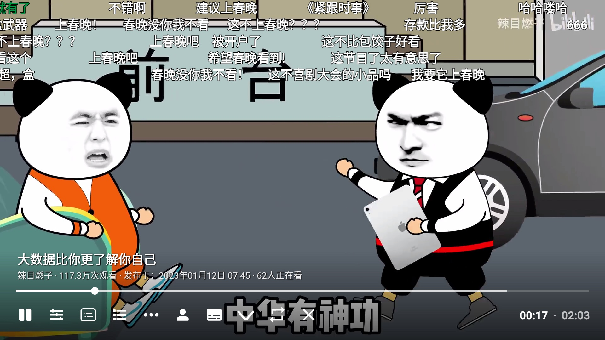

BBLL 到底值不值得装？电视端 B 站客户端横向对比
从遥控器交互重设计到杜比全景声音轨自动联动，再到可调的弹幕屏蔽等级，BBLL 在同类电视端 B 站客户端里走出了一条差异化路线。本文对比其优势、取舍与适用场景。
电视端看 B 站的几种路子
过去两年电视上看 B 站这件事，我试过不下五种方式：官方的云视听小电视、各种第三方移植、甚至直接用浏览器访问网页版。每款都有自己的理由活在市场上，但到 v1.4.x 之后的 BBLL，是我觉得唯一一个在几个关键点上做出了明显差异化选择的——不是功能堆砌，是真的在遥控器这个交互载体上重新思考了"怎么让人在沙发上舒服地看 B 站"。目前你可以直接从它的官网获取安装包和完整说明。
先说这个类目的大致格局。官方客户端的优势永远是稳：账号绑定最顺、会员权益支持最完整、支付入口畅通无阻。但代价也很明显——它本质上是触屏 UI 硬搬到遥控器上，操作逻辑别扭，而且很多高级设置藏得很深。其他第三方客户端有的侧重直播分区，有的做了番剧追更提醒，但大部分都在"复刻 B 站移动端界面"这条路上走，遥控器的方向键和确认键仍然被当成触屏替代品来用。
BBLL 走的是另一条路：它承认遥控器就是遥控器，不去模拟触屏，而是围绕 D-Pad 的上下左右和确认键重新设计了整套交互。
遥控器交互：唯一一款让我觉得"顺手"的 B 站客户端
这个差异化我要放在第一个说，因为它直接决定了你用这款应用半年后肩膀会不会疼。
确认键暂停这件事，其他客户端至今没做对。
绝大多数 TV 端应用都要求你先把焦点移到屏幕上的暂停按钮，再按确认键才能暂停播放。BBLL 从某个版本开始改成了"按中心键一下即暂停/播放"——不需要移动焦点，手指按下去的瞬间视频就停了。这个改动看起来很小，但每天暂停几十次的话，体验差距非常大。

菜单键是真正的"多面手"。
在 BBLL 里，按遥控器上的菜单键（有的叫 MENU 键、有的叫三条横线），番剧/影视会弹出选集对话框，普通投稿视频会弹出 UP 主详情页——这两种是完全不同的入口，但 BBLL 统一用菜单键触发。对比之下，其他客户端要么把选集做成一个独立按钮，要么根本没有 UP 主详情入口，想接着看某个 UP 的视频只能退出来重新搜。
杜比全景声：被低估的音轨自动联动
画质是大家都在卷的领域，8K、Dolby Vision 这些标签各家都有。但 BBLL 在音频上做了一个别家没做的细节：当你选了 Dolby Vision 或 8K 清晰度时，如果视频本身带有杜比音轨，它会自动切过去。
这件事听起来简单，实际用起来感受完全不一样。我之前用官方客户端，每次开一部支持杜比的影片，都要手动进设置里切音轨——电视菜单很深，操作繁琐。BBLL 把这个联动逻辑做在了清晰度切换里，选完画质声音自动跟上，不用再多走一步。
无损音轨也是类似的情况。不是所有视频都提供无损音轨，但 BBLL 会在有条件的时候自动让你用上，而不是藏在某个子菜单里等你偶然发现。
当然，这个功能有前提：你的电视或音响设备得支持杜比解码。设备不支持的时候 BBLL 会给出无声或杂音的提示，这时切回普通音轨就行，不会硬卡着让你没法看。
弹幕屏蔽等级：不只是开或关
弹幕这件事是 B 站的灵魂，但也是很多人放弃在大屏看 B 站的原因——热门视频的弹幕能把画面盖得严严实实。
BBLL 在 v1.4.3 之后加了一个弹幕屏蔽等级的功能。它不是传统的"开/关"两档，而是分级过滤：等级越高，被滤掉的刷屏和水弹幕越多，但剩下的也越少。这个设计的妙处在于它承认了一个事实——弹幕的密度需求是分场景的。
热门视频爆炸刷屏 → 等级调高；冷门视频本来就没几条弹幕 → 关掉屏蔽；给孩子看的内容 → 等级拉满；自己囤的正剧 → 中等配合占屏比 1/8。这种按场景调的弹性，是同类客户端里几乎看不到的。不同等级的具体搭配策略和弹幕观感调节的细节，可以去翻一下它的中文文档。
它的取舍：为这些优势付出了什么
BBLL 的差异化不是免费午餐。要享受上面这些优势，你得接受几个前提：
首先，安装门槛就比官方客户端高。 因为它是第三方客户端，不会出现在电视自带的应用商店里。主流安装方式是 U 盘拷入——整个流程需要从官方下载获取对应版本的 apk、拷贝到 U 盘、在电视文件管理器里找到并安装，还要在设置里临时允许"未知来源应用"。对习惯了应用商店一键安装的用户来说，这个门槛直接把不少人挡在门外。虽然也有远程安装等替代方案，但 U 盘始终是最稳的兜底。
其次，平台覆盖有限。 BBLL 跑在 Android TV 和安卓盒子上，如果你用的是 Apple TV、Fire TV 或者走 iOS 生态的电视，根本装不了。这点是所有第三方安卓 TV 客户端的共性，但确实是一个实际限制。
最后，会员和支付体验不如官方客户端顺畅。 B 站的会员权益、付费内容购买这些功能，BBLL 能支持但入口没有官方客户端那么直观。如果你重度依赖大会员的付费内容解锁，可能需要偶尔切回官方客户端完成操作。
选购结论
什么样的人选 BBLL？
- 深度 B 站用户，每天在电视上看 B 站超过一小时，遥控器操作的手感差异对你来说是真实的痛点
- 有支持杜比全景声的电视或音响设备，在意音频体验而不只是画质
- 愿意花 5 分钟折腾一次安装，之后半年都不想再动它
什么样的人选别的？
- 只追番剧、偶尔看两眼，官方客户端的功能完全够用，不想折腾安装
- Apple TV / Fire TV 等非安卓平台用户
- 重度依赖大会员付费内容的购买和解锁流程
一句话推荐
如果你家电视跑的是安卓系统，又确实经常在大屏上看 B 站，值得花五分钟装一下 BBLL——它的遥控器交互重设计和音轨联动，是同类客户端里真正能让日常使用体验上一个台阶的改动。这套整理好的资料包在GitHub、Gitee和GitCode上各有一份，哪个方便就用哪个。